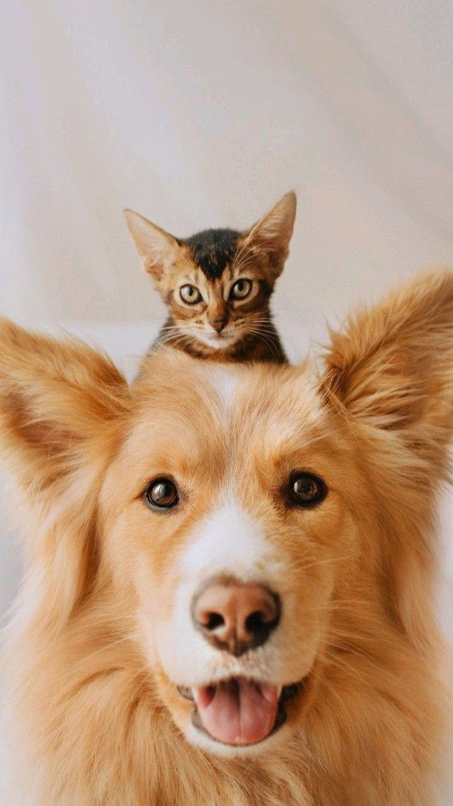

At PolyPaws, we are passionate about improving the lives of dogs and cats in our communities. Our mission is to provide care, nourishment, and a loving environment for animals in need.
Through your generous donations, we ensure animals receive quality food, medical care, and a safe space. Additionally, we support our mission by offering ethically sourced products for pet lovers.
Together, we can create a better world for our furry friends. Whether it's feeding stray animals, supporting adoption drives, or contributing to healthcare, every small effort makes a big difference.
